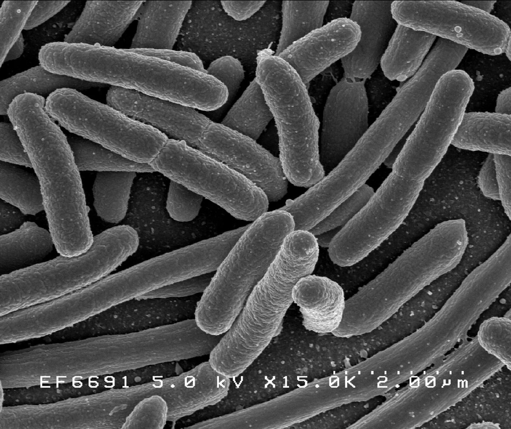
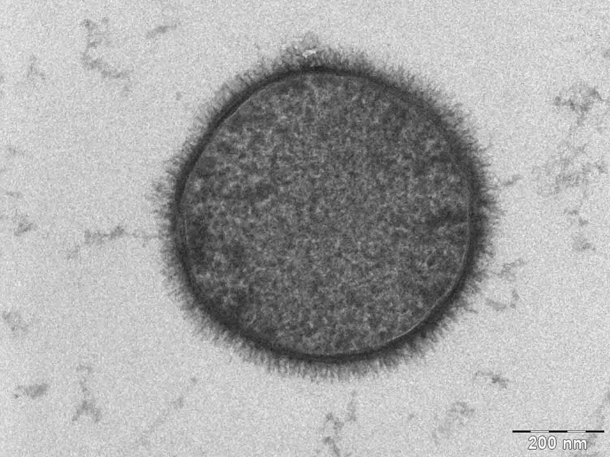
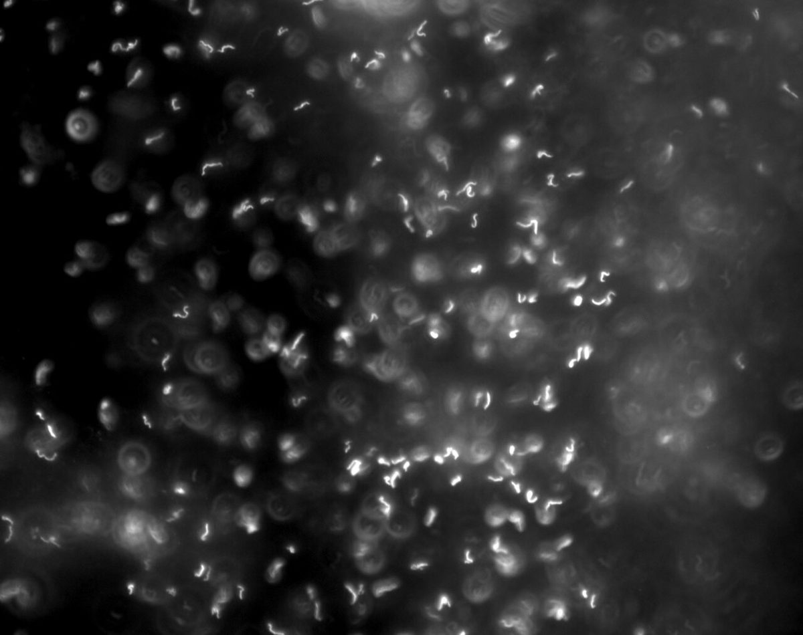
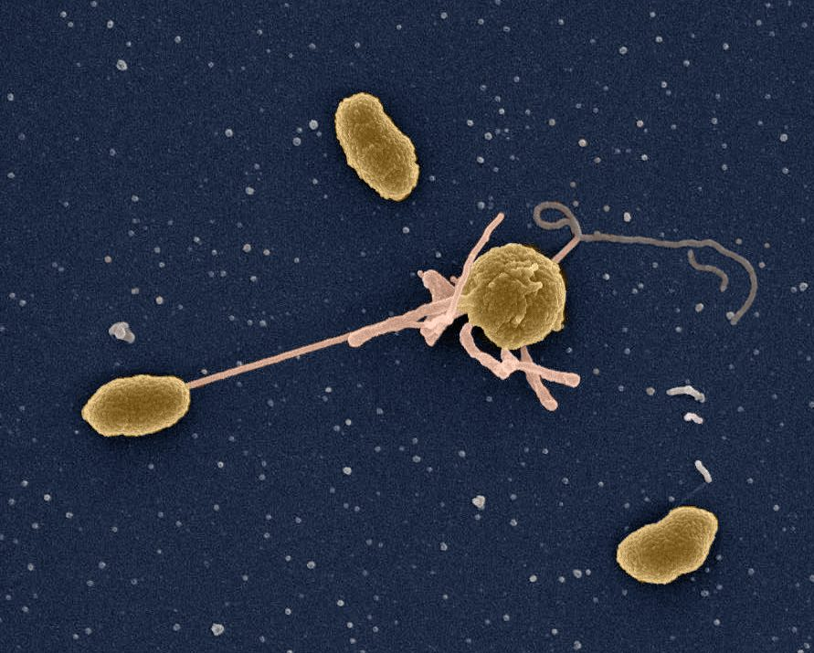
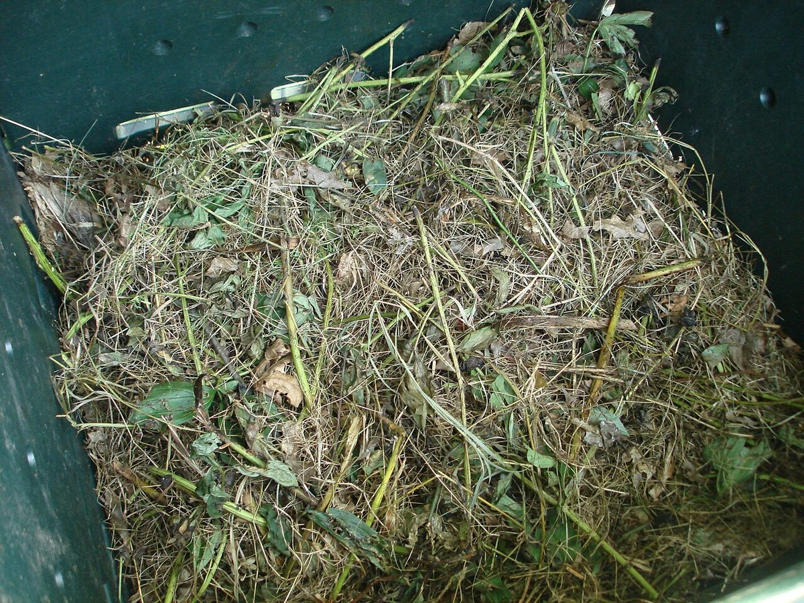
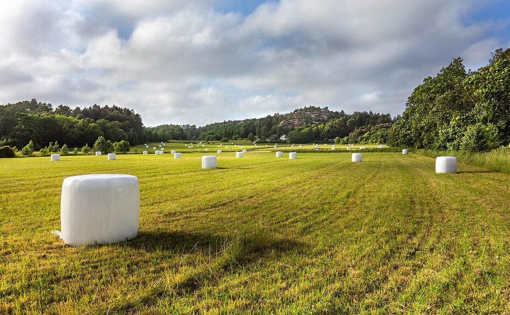

§ 7 · Биология · 6 класс
Невидимый
мир бактерий
Они живут в капле воды и в почве, помогают готовить сыр, а иногда и вредят. Собери бактерию, определи её форму, разберись в роли и проверь себя в викторине.
4станции
9вопросов
≈7минут
0рекорд

Маршрут
Четыре станции и финал
01Станция · Строение
Собери бактерию
Перетащи подпись на метку — или сначала нажми подпись, затем метку. Оформленного ядра у бактерии нет: одна хромосома лежит прямо в цитоплазме.
Схема · микропрепаратнаведи на часть
Выбери подпись справа и нажми на нужную метку.
02Станция · Формы
Кто здесь живёт?
«Бактерия» по-гречески — «палочка», но формы бывают разными. Рассмотри четыре реальные микрофотографии и определи форму.
Определено0 / 4
Определи форму1 / 4
Какая форма у этой бактерии?
Выбери один вариант
Памятка
Коккишарики

Бациллыпалочки
Спириллыспирали
Вибрионыизогнутые палочкиНекоторые бактерии передвигаются с помощью жгутиков.
03Станция · Роль
Друг, санитар или враг?
Распредели шесть карточек по трём группам. Ошибки можно исправить до проверки.

Остаткирастений и животныхБактерииразлагают остатки
→

Минеральные солиснова растениямРаспредели карточки0 / 6
Карточки
Вопрос 1 / 9 Бактерии · § 7
Баллы: 0
Выбери один вариант
Загрузка вопроса…
Клавиши 1–4 — ответ, Enter — дальше
0%0 из 9
Викторина завершена
Отличная работа!
0верно
0ошибок
0рекорд